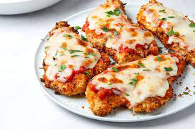

Chicken Parmesea

Description
An Italian-American classic, chicken parmesean is everyone's favourite marriage
of crsipy and juicy fried chicken cutlets, delicious and acidic tomatoe sauce, and
gooey cheese. Usually served on top a bed of carbs in the form of pasta. What's not to like?
Ingredients
- 2 lbs of boneless chicken breasts or thighs
- 1 cup bread crumbs
- 3 tbsp olive oil
- 1 cup flour
- 2 large eggs, beaten
- 2 tsp salt
- 1 tsp cracked pepper
- 1 cup mozzarella cheese, shredded
- 1/2 cup marinara sauce of your choice
- 1 package dried pasta, (sugesst spaghetti or penne)
- 2 tsp oregano
- 3 tbsp fresh chopped parsley
Directions
- Take boneless chicken and pound thin to a uniform thickness, this ensures even cooking
- Season chicken breasts with salt and pepper to taste
- Place bread crumbs, beaten eggs, and flour into separate bowls
- Mix oregano, 2 tsp salt, and 1 tsp pepper into flour
- Take oven safe skillet and begin heating over medium high heat
- Take a piece of chicken and dredge in flour, then place in egg mixture,
then finally coat in bread crumbs. Repeat for each piece shaking off excess.
- Turn on oven and begin to preheat broiler, also start to boil a pot of water for pasta
- Once skillet is hot, add olive oil
- Place breaded chicken into hot pan, and begin to shallow fry, add more oil ass needed
- Fry until both sides are golden brown and chicken cooked through
- Top fried chicken with marianara sauce and shredded cheese then place skillet in oven
- Add pasta to water and cook to desired doneness
- When cheese on top of chicken is melted, bubbly and slight browned remove from oven
- Toss pasta with extra sauce and serve with chicken served atop bed of pasta
- Top with chopped fresh parsley if desired